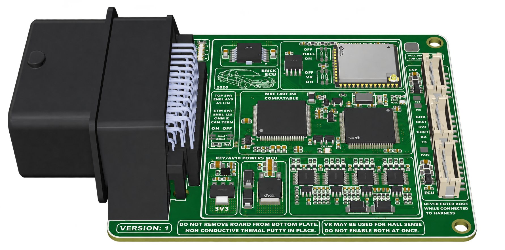

Mini Brick
Compact engine control with protected outputs, configurable input modes, native Wi-Fi tuning and electronic-throttle capability.
Mating harness connector and terminal pins are included.

STM32F407 / MREExplore Mini Brick
Purposeful I/O
10 protected 0.6 A low-side outputs, four ignition outputs, four injector outputs, and three additional high-current low-side outputs.
Flexible inputs
10 analog voltage and 4 temperature/digital inputs, plus hardware-configurable VR/Hall, LIN and wake-up options.
Built-in connectivity
CAN, native Wi-Fi TunerStudio tuning, and a 6 A H-bridge for electronic throttle control.
Designed around four-cylinder applications or six-cylinder engines with wasted-spark ignition.
High-impedance port injectors are supported natively using the injector outputs; no external peak-and-hold controller is required.
External wideband controller required. Mini Brick firmware does not provide GDI control.
Browse engine references- Mini Brick ECU
- Mating harness connector housing
- Terminal pins for a custom harness
- Shipping and delivery in listed price
An assembled engine wiring harness is not included.
Made to order: typically ships within 3 weeks; allow up to 4 weeks during batch production. 1-year limited hardware warranty against manufacturing defects, with return inspection required. No voluntary change-of-mind returns. For off-road use only. Read warranty, shipping and safety terms before checkout.
Mini Brick — $600 CAD
Review the specifications or visit Payhip to purchase.